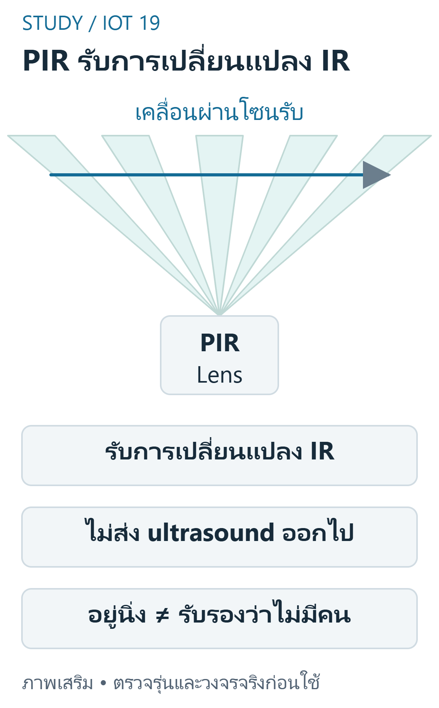
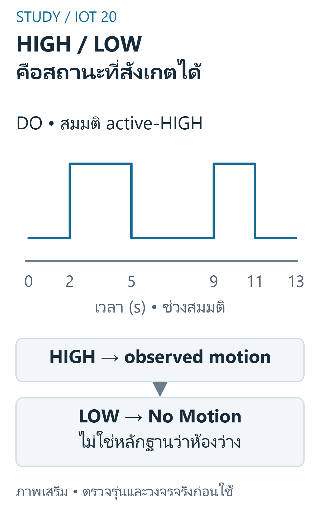

FINAL 07 — PIR และการตรวจจับการเคลื่อนไหว
เป้าหมายการเรียนรู้
- อธิบาย PIR เทียบกับ ultrasonic และข้อจำกัด presence
- อธิบาย HIGH หลาย samples จากการเคลื่อนครั้งเดียว
- ออกแบบ inputhandling โดยไม่เปลี่ยน meaning เงียบๆ
- วางแผน controlledtest เพื่อแยก PIRfault กับ software
- ออกแบบ display สองบรรทัดที่แยก sensor กับ lampstate
ขอบเขต หลักฐาน และความปลอดภัย
วิชา 89022567 เลือกศึกษา Week 9–12 โดยยังไม่ยืนยันว่าเป็นขอบเขตสอบ Final ทางการทั้งหมด หลักฐานต้นฉบับ: S12 pp.2–13; W12 functions. เลขหน้า PDF หมายถึงหน้าจริงของไฟล์ (physical page); เอกสาร Word อ้างหัวข้องานและหน้าแปลงส่วนตัวตาม บัญชีแหล่งที่มา. ไม่เผยแพร่ต้นฉบับหรือข้อมูลส่วนตัวของผู้เรียน
ตัวอย่างและเฉลยต่อไปนี้จัดทำเสริม ไม่ใช่เฉลยทางการ ใช้บอร์ด classic ESP32-WROOM กับ Arduino-ESP32 core 3.3.11 เป็นเป้าหมาย ตัวเลขขา ระดับสัญญาณ (polarity) เกณฑ์ช่วง (threshold) และที่อยู่จอ OLED เป็นสมมติฐานที่ประกาศ ห้ามเหมารวมกับ ESP32 ทุกรุ่น
ใช้เฉพาะ LED หรือโหลดแรงดันต่ำผ่านโมดูล/วงจรขับที่เข้ากันได้ ห้ามขับขดลวดรีเลย์จาก GPIO โดยตรง และห้ามต่อไฟบ้านบน breadboard ตรวจ Echo 5V กับ GPIO 3.3V วงจรแปลงระดับ กราวด์ และตัวต้านทานก่อนจ่ายไฟ การคอมไพล์และการจำลองไม่พิสูจน์ความถูกต้องของวงจรหรือความแม่นยำเซนเซอร์จริง
Passive Infrared ไม่ใช่ Radar
PIR รับการเปลี่ยนแปลงรังสี infrared ในบริเวณรับ ไม่ส่งคลื่น ultrasound เพื่อหา time-of-flight จึงไม่วัด cm หรือระบุจำนวนคนโดยตรง S12 แสดง dual-element และ Fresnellens ช่วยแบ่ง zone; การเคลื่อนผ่าน zone ทำให้ signal เปลี่ยน การยืนนิ่งอาจไม่ถูกตรวจต่อเนื่อง

อ่านภาพ: PIRเป็นpassive sensor เลนส์จัดโซนรับรังสี การข้ามโซนช่วยให้เกิดการเปลี่ยนแปลง แต่HIGH/LOWของmoduleไม่ใช่จำนวนคนหรือการรับรองว่าห้องว่าง
ข้อควรระวัง: No Motion ไม่ได้แปลว่าไม่มีคนอย่างแน่นอน
ตัวอย่างการให้เหตุผลที่จัดทำเสริม:
PIR ย่อมาจากหลักการใด?
แนวคำตอบ: Passive Infraredรับการเปลี่ยนแปลงรังสี — PIR ไม่ใช่ activeultrasonicsensor
Digital Module และ Hold Time
PIRmodule นำ signal ไปประมวลผลแล้วให้ DO ตามวงจร output อาจ HIGH ค้างหรือ retrigger ตาม mode ต้องตรวจรุ่น / polarity / warmup / holdtime จริง S12 ภาพแพร่หลายไม่บอกรุ่นที่ผู้เรียนถืออยู่ครบ บทนี้สมมติ 3.3VcompatibleactiveHIGH เพื่อ trace เท่านั้น

อ่านภาพ: ช่วงHIGHอาจค้างตามhold timeของmodule จึงไม่ใช่การนับคนและไม่ยืนยันว่าคนเคลื่อนตลอดHIGH;ตรวจpolarity/modeจริงก่อนใช้กับtimer
ข้อควรระวัง: หนึ่งครั้งที่อ่าน HIGH ไม่ใช่หนึ่ง person หรือหนึ่ง movement เสมอ
ตัวอย่างการให้เหตุผลที่จัดทำเสริม:
อ่าน PIRHIGH5 ครั้งติดกันใน holdpulse หนึ่งช่วง นับคนได้เท่าใดแน่นอน?
แนวคำตอบ: ยังนับจำนวนคนไม่ได้ — จำนวน samples ไม่ใช่จำนวน physicalevents
รับ PIR และรักษา Semantics
ใช้ input ที่ตรง logic / GND และเปรียบเทียบ digitalRead(PIR_PIN)==HIGH ค่าที่ส่งเข้าสู่ controller คือ observedmotionbool ไม่ใช่ groundtruth คนอยู่ ห้องว่างหรือ warmup อาจให้สัญญาณเปลี่ยน ต้องใช้ state และ diagnostic สำหรับข้อจำกัดที่ตรวจพบ
ข้อควรระวัง: การตั้ง INPUT_PULLUP ไม่เหมาะกับทุก activeoutput และทุกขา
ตัวอย่างการให้เหตุผลที่จัดทำเสริม:
code ที่แปลง inputactiveHIGH เป็น bool เหมาะสมคือใด?
แนวคำตอบ: bool motion=digitalRead(PIR_PIN)==HIGH; — digitalRead ให้ state ไม่ใช่ distance
False Trigger และ Test Plan
สภาพแวดล้อมที่เปลี่ยน infrared การติดตั้ง การจ่ายไฟหรือ modulewarmup อาจทำให้ falseindication ต้องทดสอบตาม spec จริง ห้ามเดาระยะ warmup หรือมุมตรวจจากรูปโมดูลอื่น ไม่ตัดสินคนเข้าออกจาก DO อย่างเดียว
ข้อควรระวัง: การลด delay อย่างเดียวไม่ได้พิสูจน์ว่า falsealarm หาย
ตัวอย่างการให้เหตุผลที่จัดทำเสริม:
ต้องการ debugfalseindication อย่างมีหลักฐานควรทำอะไร?
แนวคำตอบ: เก็บtraceและเงื่อนไขpower/environment/modulemodeจริง — ทดสอบแยกชั้นและไม่แต่งข้อมูล
Motion, Presence และ Event
W12 ต้องแสดง Motion Detected เมื่อ observedHIGH และ No Motion เมื่อ LOW แยกจาก Lamp ON ที่อาจค้าง 10s เมื่อ motionLOW แล้ว การนับ risingedges กับนับ HIGHsamples เป็นคนละสถิติและไม่มีอันใดรับรองจำนวนคนถ้าไม่มีหลักฐานเพิ่ม
ข้อควรระวัง: No Motion กับ Lamp OFF ไม่ใช่ state ที่เกิดพร้อมกันเสมอ
ตัวอย่างการให้เหตุผลที่จัดทำเสริม:
PIRLOW หลังหยุดเคลื่อน 2s แต่ timer ค้างไฟ 10s ข้อความใดอาจถูกต้องพร้อมกัน?
แนวคำตอบ: No Motion และ Lamp ON — observedmotion ต่างจาก holdstate
โปรแกรม C++ ที่เขียนเสริม
สเก็ตช์ C++ นี้เขียนเสริมสำหรับเป้าหมายที่ระบุ คอมเมนต์อธิบาย API และสมมติฐาน มีการตรวจคอมไพล์จริง แต่ไม่มีการอัปโหลดหรือวัดผลฮาร์ดแวร์ ห้ามนำไปต่ออุปกรณ์ที่ยังไม่ทราบสเปกโดยตรง
#include <Arduino.h>constexpr uint8_t PIR_PIN=33; // สมมติDOactiveHIGHและcompatible3.3Vvoid setup() { Serial.begin(115200); pinMode(PIR_PIN,INPUT); }void loop() { const bool motion=digitalRead(PIR_PIN)==HIGH; Serial.println(motion?"Motion Detected":"No Motion"); delay(100); // samplingตัวอย่าง ไม่ใช่หลักฐานจำนวนคนหรือcontinuouspresence}อ่าน Expected Behavior และกรณีขอบ
PIR HIGH พิมพ์ Motion Detected และLOWพิมพ์ No Motion;เป็นinputที่สังเกตไม่ใช่การยืนยันจำนวนคนหรือpresence
- No Motion ไม่ได้แปลว่าไม่มีคนอย่างแน่นอน
- หนึ่งครั้งที่อ่าน HIGH ไม่ใช่หนึ่ง person หรือหนึ่ง movement เสมอ
- การตั้ง INPUT_PULLUP ไม่เหมาะกับทุก activeoutput และทุกขา
- การลด delay อย่างเดียวไม่ได้พิสูจน์ว่า falsealarm หาย
- No Motion กับ Lamp OFF ไม่ใช่ state ที่เกิดพร้อมกันเสมอ
ฝึกอธิบายพร้อมแนวประเมิน
โจทย์เหล่านี้จัดทำเสริมเพื่อทบทวน ไม่ใช่ข้อสอบมหาวิทยาลัยที่ยืนยันแล้ว โหมดฝึกและคลังข้อสอบด้านล่างแสดงคำอธิบายหลังส่งคำตอบตามระบบเดิม เมื่อปิด JavaScript ยังอ่านเฉลยในส่วนพับได้ คำอธิบายและโค้ดอิสระใช้เกณฑ์ประเมินตนเอง (rubric) ไม่ตรวจคะแนนอัตโนมัติ
1. Passive Infrared ไม่ใช่ Radar
อธิบาย PIR เทียบกับ ultrasonic และข้อจำกัด presence
แนวคำตอบ: แยก passivereceive / changes จาก activepulse / distance และไม่อ้าง identity
2. Digital Module และ Hold Time
อธิบาย HIGH หลาย samples จากการเคลื่อนครั้งเดียว
แนวคำตอบ: พิจารณา moduleholdtime และ sampling อย่านับทุก HIGH เป็น event ใหม่
3. รับ PIR และรักษา Semantics
ออกแบบ inputhandling โดยไม่เปลี่ยน meaning เงียบๆ
แนวคำตอบ: ระบุ pin / mode / activelevel และแยก fault / unknown เมื่อระบบตรวจได้
4. False Trigger และ Test Plan
วางแผน controlledtest เพื่อแยก PIRfault กับ software
แนวคำตอบ: บันทึก inputtrace / แหล่งจ่าย / เงื่อนไข environment โดยไม่แต่งจำนวนทดลอง
5. Motion, Presence และ Event
ออกแบบ display สองบรรทัดที่แยก sensor กับ lampstate
แนวคำตอบ: แสดง observedmotion และ actuatorstate แยกและอธิบาย holdtimer
สรุปก่อนสอบ
- Passive Infrared ไม่ใช่ Radar: No Motion ไม่ได้แปลว่าไม่มีคนอย่างแน่นอน
- Digital Module และ Hold Time: หนึ่งครั้งที่อ่าน HIGH ไม่ใช่หนึ่ง person หรือหนึ่ง movement เสมอ
- รับ PIR และรักษา Semantics: การตั้ง INPUT_PULLUP ไม่เหมาะกับทุก activeoutput และทุกขา
- False Trigger และ Test Plan: การลด delay อย่างเดียวไม่ได้พิสูจน์ว่า falsealarm หาย
- Motion, Presence และ Event: No Motion กับ Lamp OFF ไม่ใช่ state ที่เกิดพร้อมกันเสมอ
อ้างอิงและข้อจำกัด
- ต้นฉบับส่วนตัว: S12 pp.2–13; W12 functions; ไม่แนบสำเนา ไม่อ้างว่ามีsourceอื่นที่ยังไม่เปิด
- Source coverage, Academic verification, Exam verification, QA
- ESP32 datasheet — ตรวจ2026-10-29;ใช้target/core3.3.11สำหรับcompileและอย่าสมมติว่าlatestdocsตรงกับทุกcoreเก่า
- GPIO API — ตรวจ2026-10-29;ใช้target/core3.3.11สำหรับcompileและอย่าสมมติว่าlatestdocsตรงกับทุกcoreเก่า
- PIR principles — ตรวจ2026-10-29;ใช้target/core3.3.11สำหรับcompileและอย่าสมมติว่าlatestdocsตรงกับทุกcoreเก่า
ข้อจำกัดที่ยังไม่ยืนยัน: แรงดัน ระดับกระตุ้น ที่อยู่ และการต่อสายของโมดูลจริง ความแม่นยำ สภาพแวดล้อม และวิดีโอทดลอง การตรวจเว็บ/คอมไพล์/จำลองไม่เท่ากับผ่านการทดสอบฮาร์ดแวร์ และไม่ยืนยันขอบเขตข้อสอบจริง